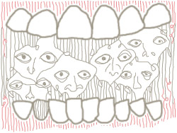

Hitotoki
New York Tales from Curious Borough Dwellers- Tokyo (en)
- Tokyo (ja)
- New York (ny)
- London
- Paris
- Shanghai
- Sofia
 image: S. Kwak“Y'all in a band'r somethin'?”
Easy to get excited about New York when you’re 23 and in a band from Nowhere, Midwest. And easy to pack up your van and shiny new trailer and drive and camp out until the entire landscape is city. The hard part is when you get to the city and realize no one cares, and that you’re probably in somebody’s way. When you set up your gear in a small coffee shop in Williamsburg and wait for the crowd. And wait. And they say, “You guys better start, we got other acts after you.” When you still play the best doggone show you can muster up for your two friends sitting on the couch. And when the patrons are glad you’re done playing.
So it only seems natural that we meet ‘Q’ waiting for a subway train somewhere under this city[1]. We’re half-swooned by the smell of a million people and a hundred years, and this guy, Q, approaches my five friends and me. Or maybe I should say, “this cat.” From fifteen feet away, he appears to be a subway janitor wearing a fresh leather jacket and jazzman shades, sweeping the floor. But he’s already half way through a business rap:
“Y’all in a band’r somethin’? Y’all look like y’in a band…”
Big smile, silver tooth. At least one.
“Ever think’a makin’ a record? Here, all’a y’all get a card…”
Now each of us is pondering a glossy, black, embossed business card that reads, “Q; Hip Hop Production, Engineering and Management,” along with a phone number and Brooklyn address. It says nothing about subway janitor, and none of us ask.
We look like targets for anything in a New York City subway but making a hip-hop record: a good knifing maybe, or at least someone asking if we’re lost (which we would be within the hour). We are six doe-eyed country muffins wandering a concrete wonderland looking for girls and beer, finding only the latter. (Up to this point, the only attention we’d drawn was from a hooker carrying her own bedding and a few helpful homeless fellows.)
Sweep, sweep, sweep.
“Thanks man, yeah, we’ll totally get a hold of you if we….” I sound like a pretty girl who doesn’t like to hurt feelings even though she has to. I look up with a half-smile but he’s already gone. Up to the street? Down the corridor? Who knows. And there’s no telling how long we were rapt, spellbound in this strange moment. Either way, we all snap back into reality, and just in time for the next train to who-knows-where, NYC.
Something about a record producer sweeping a subway and a rock ‘n roll band with nowhere to go in the capitol of the Known Universe struck me as paradoxical, though my card vanished in New York later that night. Today, I wonder if this even happened. I mentioned it to one of the guys recently, and he just shrugged. He still has his. 
referenced works
- At the little-used Bowery subway station, you can only catch the J, M and Z trains, which run infrequently and whose routes are largely duplicated by other lines. The station is in relative disrepair, never having lived up to the passenger capacity that subway planners probably imagined back in 1913, when it was built by the Brooklyn-Manhattan Transit Corporation (BMT), one of three early-20th-century New York subway operators. ↩
location information
- Name: the Bowery subway station
- Address: Delancy Street at the Bowery
- Time of story: late night
- Latitude: 40.720624
- Longitude: -73.993971
- Map: Google Maps
026 “'Can I taste your vanilla?'”
025 “I save my spit for the next block so they don't mistake a cold for an insult.”
024 “The cruise passed close, with laughter loud over the water...”
023 “His children came to him but his wife, bird-like and sad-looking, did not.”
022 “I've been shot twenty-seven times!”
021 “The entrance at the top of the stairs is locked, but another staircase leads to the basement.”
020 “Danny busted out a bottle of Brut 33 aftershave...”
019 “I clutch the rusting, peeling hulk of the globe and hang on tight.”
018 “The naked man’s hands only mimicked a fondling.”
017 “That's when I knew I wanted to live in New York: in the midst of those fragile bralets and bodysuits.”
016 “The guns, we tell the police later, were black like ice.”
015 “...my own talisman against the folly of my youth.”
014 “Y'all in a band'r somethin'?”
013 “Perhaps it was the lanky teenager with the bright red book-bag that made me think I saw Adam.”
012 “I remember flattening myself against the streaky windows of the PATH train like an insect.”
011 “I glanced up to see another shape hit the sand.”
010 “Vibrating almost imperceptibly in the breeze like a woody tuning fork.”
009 “Then the jazz stopped and the radio said the war had started in the Middle East. ”
008 “Shirtless Boris Yeltsin’s skin reddens as he reads a book.”
007 “Port Authority was there with open, non-judging arms.”
006 “His almost-loss was my almost- nonexistence.”
005 “On the cold hard floor of the orphanage, I sang, longing for the day that they would come and rescue me.”
004 “He was a lawyer, after all.”
003 “The parking lot gate was open, and we ran in with the skateboard.”
002 “We arrived on completely Russian streets, with Russian signs and a familiar rudeness.”
001 “...the hourly clicking of Oxfords and high heels across the parking lot.”

Write for Us!
We’re looking for short narratives describing pivotal moments of elation, confusion, absurdity, love or grief — or anything in between — inseparably tied to a specific place in Tokyo or New York.
New York City:
Or receive updates by email
Addresses only used for the occasional hitotoki mailing. Otherwise locked away in a secret vault in the phone booth at Crif Dogs.
A list of all available RSS feeds is on the about page
commentary